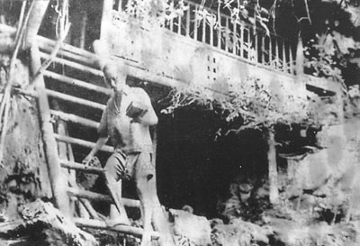
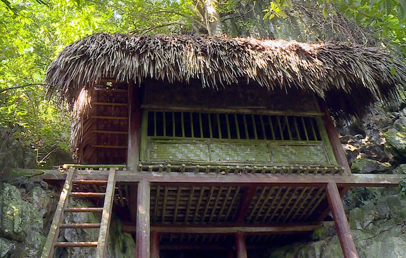

Hang Bòng là một hang đá nhỏ nằm lừng chừng núi Bòng, các đồng chí cảnh vệ đã dựng một căn lán nhỏ sát với cửa hang, lán được làm theo kiểu nhà sàn miền núi, có một gian, diện tích khoảng 12m2, lán tựa vào núi và nhìn xuống được cánh đồng thôn Cả, xã Tân Trào ,Hang cách không xa Hồng Thái.
Lán Hang Bòng là nơi làm việc của Trung ương Đảng Cộng sản Việt Nam, Chính phủ và Hồ Chí Minh ở Việt Bắc trong thời kỳ chống Pháp (1946-1954). Từ năm 1950 đến năm 1951, Hồ Chí Minh ở hang này, trực tiếp đi chỉ đạo chiến dịch Biên giới (1950) và Đại hội Đảng toàn quốc lần thứ hai (tháng 2 năm 1951). Trong thời gian ở và làm việc tại lán Hang Bòng, Chủ tịch Hồ Chí Minh cùng Trung ương Đảng, Chính phủ đã đề ra nhiều quyết định quan trọng để củng cố hệ thống chính quyền nhân dân, mở rộng quan hệ với các nước trên thế giới đưa vị thế chính trị của Việt Nam lên một tầm cao mới. Tại đây, Chủ tịch Hồ Chí Minh đã đề ra nhiều quyết sách về kinh tế, tài chính, quân sự, quốc phòng. Trong thời gian ở Hang Bòng, Bác đã ký nhiều sắc lệnh quan trọng, dự và chủ trì nhiều cuộc họp của Ban chấp hành Trung ương Đảng, Chính phủ, viết báo, làm thơ, viết thư thăm hỏi, động viên cán bộ, chiến sĩ ngoài mặt trận, các cháu thiếu nhi, đồng bào vùng bị địch tạm chiếm. cũng từ căn lán này, mọi mệnh lệnh, chỉ thị được truyền đi toàn quốc dẫn dắt cách mạng Việt Nam vững bước giành thắng lợi, đánh dấu một thời kỳ vừa kháng chiến vừa kiến quốc hào hùng của cả dân tộc.

Bác Hồ làm việc tại lán Hang Bòng
Lần thứ nhất khi ở và làm việc tại lán Hang Bòng thời gian từ 17/10/1949 đến tháng 9/1950, Chủ tịch Hồ Chí Minh đã ký các sắc lệnh: Sắc lệnh số 121, ấn định cấp bậc, phù hiệu, cấp hiệu và quân phục cho quân đội quốc gia (ngày 20/10/1949); Sắc lệnh số 126, quy định nghĩa vụ quân sự (ngày 4/11/1949); Sắc lệnh số 138b, về việc thành lập Ban Thanh tra Chính phủ trực thuộc Phủ Thủ tướng và Sắc lệnh số 138c, về việc cử các thành viên vào Ban Thanh tra Chính phủ (hai sắc lệnh 138b và 138c cùng được ký vào ngày 18/12/1949).
Tháng 2/1950, Chủ tịch Hồ Chí Minh bí mật đến Thủ đô Mátxcơva của Liên Xô. Tại đây, Người đã có cuộc hội kiến với Stalin, Tổng Bí thư Ban Chấp hành Trung ương Đảng, Chủ tịch Hội đồng Bộ trưởng Liên Xô . Tháng 4/1950, Bác trở lại Hang Bòng, ngày 10/4/1950, Bác triệu tập họp Hội đồng Chính phủ tại Thác Rẫng, thôn Lập Binh, xã Bình Yên để thảo luận một số vấn đề về tình hình thế giới, tình hình quân sự và ra nghị quyết về công tác ngoại giao...
Ngày 27/7/1950, Bác gửi thư nhắc nhở Ban Tổ chức Trung ương nhớ và quan tâm đến anh em thương binh, gia đình liệt sĩ, gia đình có công với cách mạng. Đầu tháng 9/1950, Chủ tịch Hồ Chí Minh lên đường đi chỉ đạo Chiến dịch Biên giới.
Ngày 10/10/1950, sau khi chỉ huy chiến dịch Biên giới kết thúc thắng lợi, Bác Hồ trở về Hang Bòng lần thứ hai (lần này Bác ở và làm việc từ ngày 10/10/1950 đến 4/2/1951) để tiếp tục chỉ đạo cuộc kháng chiến trong cả nước. Đây cũng là thời gian Bác cùng Trung ương Đảng đưa ra nhiều quyết nghị quan trọng về nội chính và kinh tế. Ngày 14/10/1950, Bác Hồ gửi thư cho đồng bào Cao - Bắc - Lạng nhân dịp chiến thắng trên chiến trường Biên giới.
Trong tháng 11/1950, Người đến dự và nói chuyện tại Hội nghị tổng kết Chiến dịch Biên giới. Cuối tháng 12/1950 Bác đến thôn Đá Bàn, xã Mỹ Bằng, huyện Yên Sơn thăm Chính phủ kháng chiến Lào. Sau đó đi Kim Bình, huyện Chiêm Hóa dự Đại hội Đảng toàn quốc lần thứ II (từ ngày 11 đến 19/2/1951).

Lán Hang Bòng đơn sơ nhưng là di tích rất quan trọng của lịch sử cách mạng Việt Nam.
Trong lần thứ ba Bác trở lại Hang Bòng (từ ngày 20/2/1951 đến 30/12/1952), ngày 3/3/1951 Bác tới dự và phát biểu tại buổi lễ khai mạc Đại hội thống nhất Việt Minh - Liên Việt và thành lập Mặt trận Liên Việt. Thời gian này, Chủ tịch Hồ Chí Minh đã ký các sắc lệnh: Sắc lệnh số 15 thành lập và quy định nhiệm vụ tổ chức Ngân hàng Quốc gia Việt Nam (ngày 6/5/1951); sắc lệnh số 40 ban hành bản Điều lệ tạm thời thuế nông nghiệp (ngày 15/7/1951)
Tháng 12/1951 Bác gửi thư cho các họa sĩ nhân dịp triển lãm hội họa. Người khẳng định vai trò của văn hóa nghệ thuật nói chung và văn nghệ sĩ nói riêng đối với sự nghiệp cách mạng. Đầu tháng 9/1952, Bác ra lời kêu gọi đồng bào và chiến sĩ cả nước nhân dịp kỷ niệm lần thứ 7 Cách mạng Tháng Tám và Quốc khánh 2/9, Người đề ra những nhiệm vụ quan trọng đó là chuẩn bị đầy đủ điều kiện chuyển sang tổng phản công...
Lán Hang Bòng là nơi lưu niệm các sự kiện cách mạng, kháng chiến, là di tích nối liền với những sự kiện lịch sử hào hùng của cách mạng Việt Nam có giá trị đặc biệt quan trọng trong việc giáo dục truyền thống cho thế hệ trẻ, cho việc nghiên cứu nhiều vấn đề về: Lịch sử chiến tranh, lịch sử Đảng, đặc biệt là về Chủ tịch Hồ Chí Minh. Di tích còn giúp khách tham quan có cái nhìn toàn cảnh về một quần thể di tích từ thời kỳ tiền khởi nghĩa đến kháng chiến chống thực dân Pháp xâm lược.

Đình Hồng Thái
|

Lán Nà Nưa
|

Lán Hang Bòng
|

Flaminggo Tân Trào
|

Cây đa Tân Trào
|

Đình Tân Trào
|
© 2021 Khu di tích lịch sử Tân Trào
Địa chỉ: Tân Trào, Sơn Dương, Tuyên Quang
Điện thoại:liên hệ group 4